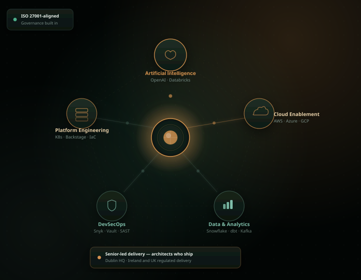
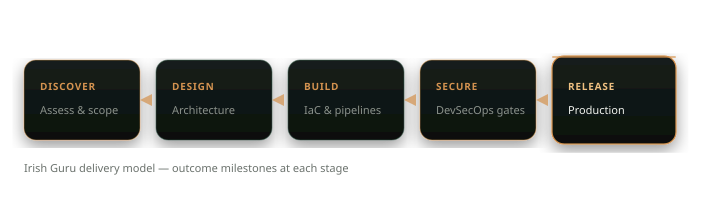

120+
Production releases delivered
Irish & UK regulated delivery
Architects and engineers embedded in your organisation — AI programmes, cloud migration, and secure release pipelines built with the governance your auditors expect.

Who we are
A Dublin-based consultancy for CTOs, engineering directors, and transformation leads who need senior people on the ground — designing architecture, running migrations, hardening pipelines, and handing over systems your team can operate without us.
120+
Production releases delivered
18
Regulated-sector clients
94%
Contract renewal rate
11 wks
Median time to first production release
Each practice area is led by consultants who implement — not delegate. Engagements are scoped to business outcomes: lower run cost, faster releases, compliant migration, reliable platforms.
Use-case selection, data readiness, model deployment, and AI governance for organisations moving past pilot programmes. We build production pipelines with human-in-the-loop review where regulators require it.
Typical outcome: first governed production model within 14 weeks
Explore AI consultingLanding zones, workload migration, and FinOps on AWS, Azure, and GCP — designed for Irish and UK data residency.
25–35% cost reduction in two quarters
CI/CD, IaC, automated security gates, and SRE — integrated without six-month tooling projects.
CVE remediation under 48 hours
Internal developer platforms with golden paths and self-service environments.
Onboarding: weeks to days
Lakehouse architecture, pipelines, and governance for AI workloads.
Roadmaps written by practitioners who execute them.
Automation, modernisation, and delivery acceleration.
Full descriptionsLarge integrators sell capacity. We sell completed milestones — architecture signed off, migration waves delivered, pipelines in production.
Our model suits organisations burned by advisory-only engagements — people who sit in your stand-ups, write the Terraform, and stay through go-live.
Scope
Fees tied to deployment frequency, migration waves, audit findings closed — reviewed weekly with your sponsor.
Regulation
Central Bank, FCA, NCSC, OGP, NHS DSPT — compliance built into delivery, not a separate workstream.
Tooling is selected for your constraints — existing licences, team skills, and regulator preferences — not vendor partnerships.

3.8×
Average deployment frequency increase across DevOps engagements
30%
Typical infrastructure cost reduction within two quarters
65%
Developer onboarding time saved on platform programmes
How we deliver — end to end
Five stages. Measurable exit criteria at each gate.

We reduce ramp-up time because we already understand the regulators, procurement routes, and operational constraints in your sector.
Ireland & UK
Core modernisation, payments infrastructure, regulatory reporting, and AI-assisted operations for banks, insurers, and regulated fintech firms.
Central Bank of Ireland · FCA · PCI-DSS · PSD2 · SOX-aligned change control
Public Sector
Cloud migration and secure platform engineering for government departments.
OGP · CCS G-Cloud · NCSC principles
Healthcare
Interoperable data platforms and compliant cloud for health systems.
HSE · NHS · HL7 FHIR · DSPT
Telecom
Billing modernisation and network automation at scale.
ComReg · Ofcom · 99.9%+ availability
Enterprise
Shared-services consolidation and engineering productivity programmes.
Multi-entity governance · FinOps · SAP/Oracle
Real outcomes from regulated-sector programmes — not hypothetical ROI models.

Telecom · Ireland
A national operator needed to retire a 22-year-old billing archive on proprietary hardware. Regulators, customer service, and legal discovery required uninterrupted access throughout migration.
Approach: Event-driven ingestion to cloud object storage, indexed search layer, and read-only API. Four migration waves with automated reconciliation.
Read all case studies120+
Production releases delivered
18
Regulated-sector clients
94%
Contract renewal rate
11 wks
Median time to first release
We are deliberately small. Senior practitioners lead every engagement and remain hands-on through delivery. There are no offshore backfill layers, and we scope work to finish — not to extend across multi-year frameworks by default.
Alongside. We embed with your engineers, platform teams, and security functions. Knowledge transfer — pairing, documentation, runbooks — is built into the schedule, not added at the end if budget remains.
Yes. We regularly deliver under Central Bank oversight, FCA governance, NCSC cloud principles, OGP and CCS procurement, and NHS DSPT. We adapt to your change-advisory board, security review, and audit processes rather than imposing a separate methodology.
Most relationships start with a two- to four-week discovery: current-state assessment, stakeholder alignment, and a scoped delivery plan with explicit milestones. From there, engagements range from 10-week accelerators to multi-year platform programmes — always with defined exit criteria.
Yes. We deliver across England, Scotland, Wales, and Northern Ireland — remote, hybrid, or on-site. Our consultants work within both Irish and UK regulatory and procurement contexts regularly.
A 45-minute call with a senior practitioner. We will assess fit honestly — and outline a practical first step if there is one.